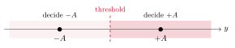
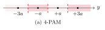
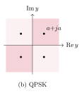
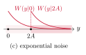
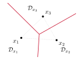
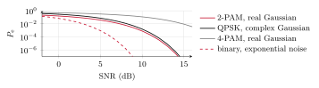

Topic 1. Detection
In this topic
A receiver observes a noisy version Y of a transmitted symbol X and has to guess which symbol was sent. This first topic is about making that guess as well as possible, and about knowing how often it fails. Along the way we introduce the probabilistic language used in the rest of the course. Sections 1.1 to 1.4 correspond to the first lecture and Sections 1.5 and 1.6 to the second.
We review the probability we need, which reduces to three rules for combining distributions by sums and products, and we place the channel models of the course in that framework.
We define the optimal detector, in its MAP and ML forms, prove that no other detector does better, and see that in Gaussian noise it reduces to choosing the nearest constellation point.
We describe a detector by its decision regions and use them to compute the error probability, first for each transmitted symbol and then on average.
We carry one example, binary transmission, through the three noise models of the course: real Gaussian, complex Gaussian and exponential.
We distinguish symbol errors from bit errors, and see how the errors of independent decisions accumulate along a message.
1.1 Probability review
Randomness is everywhere in digital communication. The transmitted symbol X is random because the data are, and the received symbol Y is random because of the noise. Everything we will say about a receiver, from what it should do to how often it errs, is a statement about the joint behavior of X and Y. It is therefore worth reviewing the few rules of probability that we will use again and again. There are only three of them, and they all appear in Table 1.1.
We describe the transmitter by the input distribution \Pr(x), the probability that the symbol x of the constellation \mathcal X is sent, and the channel by its channel law W(y|x), the probability that y is received when x was sent. When the output alphabet is continuous, as it will be for most of the course, W(y|x) is a probability density in y. Neither \Pr(x) nor W(y|x) alone says anything about the pair (X,Y). The object that does is the joint distribution, and this is where the rules come in.
| Rule | Formula | In words |
|---|---|---|
| Product rule | \Pr(x,y)=\Pr(x)\,W(y|x) | a joint is a marginal times a conditional |
| Sum rule | \Pr(y)=\sum_{x\in\mathcal X} \Pr(x)\,W(y|x) | a marginal is the joint summed over the other variable |
| Bayes’ rule | \Pr(x|y)=\dfrac{\Pr(x)\,W(y|x)}{\Pr(y)} | the same joint, conditioned the other way |
| Probability of an event | \Pr(A)=\sum_{(x,y)\in A} \Pr(x)\,W(y|x) | the joint summed over the outcomes in A |
| Expectation | \EE(f(X,Y))=\sum_{x\in\mathcal X}\sum_{y\in\mathcal Y} \Pr(x)W(y|x)f(x,y) | the joint summed with f inside |
| Memoryless channel | W(y_1,\ldots,y_n|x_1,\ldots,x_n)=\prod_{i=1}^{n} W(y_i|x_i) | the product rule n times |
Table 1.1. The rules of probability used in the course. For continuous alphabets, sums become integrals.
The product rule is the most important of the three. It says that the joint distribution of two random variables is always a product of two factors, the marginal of one and the conditional of the other. If X and Y were independent, the second factor would be just the marginal of Y. In general, it is the marginal of Y corrected for the dependence on X. For the pair (X,Y), this dependence is precisely the channel. Applied n times to a sequence of channel uses, the product rule gives the last line of the table whenever the noise in one use is independent of the noise in the others. We call such a channel memoryless, and all the channels in this course are memoryless.
The sum rule does the opposite. To eliminate a variable we are not interested in, we sum the joint over all its values. We will use it constantly, because the probability of an event is simply the joint summed over the outcomes that form the event, and the expectation of a function is the same sum with the function inside. For continuous alphabets both become integrals, and the manipulations are otherwise identical. Note that a probability is itself an expectation, that of the indicator function of the event, so the fourth and fifth lines of the table are really one line. We keep both because we will compute both.
Bayes’ rule, finally, is the product rule read twice: \Pr(x)W(y|x) and \Pr(y)\Pr(x|y) are the same joint, so dividing by \Pr(y) turns the channel law, which conditions on the input, into the distribution of the input given the output. That last distribution is what a receiver would like to know, and in Section 1.4 we will see that the optimal detector is built on it.
Example 1.1.
Let us apply the rules to the simplest channel, the bit-flipping channel with flip probability p, when the input bit is 0 with probability q and 1 with probability 1-q. The product rule gives the four values of the joint distribution, \begin{align*} \Pr(0,0)&=q(1-p),\tag{1.1}\\ \Pr(0,1)&=qp,\tag{1.2}\\ \Pr(1,0)&=(1-q)p,\tag{1.3}\\ \Pr(1,1)&=(1-q)(1-p),\tag{1.4} \end{align*} and the sum rule gives the distribution of the output, \Pr(Y=0)=q(1-p)+(1-q)p. Bayes’ rule then tells us how much a received 0 says about the transmitted bit, \begin{equation*} \Pr(X=0\,|\,Y=0)=\frac{q(1-p)}{q(1-p)+(1-q)p}.\tag{1.5} \end{equation*} For q=\tfrac12 this is 1-p: a received 0 was a transmitted 0 with probability 1-p, as expected. For q\neq\tfrac12 it is not. For p=\tfrac12 the answer is q whatever was received. In other words, the output then says nothing about the input. Finally, the probability of the event \{Y\neq X\} is the joint summed over the two outcomes in it, \Pr(0,1)+\Pr(1,0)=qp+(1-q)p=p, whatever the value of q. The bit is flipped with probability p regardless of what we send, which is what the channel says. The point is not the result itself, but that the same three steps apply to every channel and every event.
1.2 Channel models
Table 1.2 collects the channel laws that we will meet. The first two were introduced in the information theory course. Recall that everything about them can be computed with sums over two or three values, which makes them very convenient. The two Gaussian channels are the ones most often used in digital communications: the real one describes baseband transmission and the complex one passband transmission, as we will see in Topic 5. For now they are just two channel laws, and \sigma^2 is in both cases the total variance of the noise. In the complex case, the real and imaginary parts of the noise are independent Gaussians with variance \sigma^2/2 each.
The last channel, the additive exponential noise channel, models transmission by energy: the input is a nonnegative quantity, and the channel adds to it a random energy with exponential distribution of mean \mu. It is less common than the Gaussian ones, but it will be useful in this course, namely to remind us that what is true for Gaussian noise need not be true in general.
| Channel | Alphabets | Law W(y|x) | Parameter |
|---|---|---|---|
| Bit-flipping (BSC) | \{0,1\}\to\{0,1\} | 1-p if y=x, p otherwise | flip probability p |
| Bit-erasing (BEC) | \{0,1\}\to\{0,1,?\} | 1-p if y=x, p if y=\,? | erasure probability p |
| Real Gaussian | \RR\to\RR | \frac{1}{\sqrt{2\pi\sigma^2}}\,e^{-(y-x)^2/(2\sigma^2)} | noise variance \sigma^2 |
| Complex Gaussian | \CC\to\CC | \frac{1}{\pi\sigma^2}\,e^{-|y-x|^2/\sigma^2} | noise variance \sigma^2 |
| Exponential (AEN) | \RR_+\to\RR_+ | \frac{1}{\mu}\,e^{-(y-x)/\mu} if y\geq x, 0 otherwise | mean noise \mu |
Table 1.2. Channel models used in the course.
The three continuous channels share a common structure. In all of them the output is the input plus a noise term that does not depend on the input, Y=X+Z, so the channel law is the density of the noise evaluated at the difference, W(y|x)=f_Z(y-x). This is why the three densities in the table depend on x and y only through y-x. It also suggests the right measure of the quality of the channel, namely how large the symbols are compared with the noise. With \Es=\EE(|X|^2)=\sum_{x\in\mathcal X} \Pr(x)|x|^2 the average symbol energy, we define the signal-to-noise ratio of the Gaussian channels as \snr=\Es/\sigma^2. On the exponential channel the inputs are themselves energies, so the natural quantities are their mean \Es=\EE(X) and the ratio \Es/\mu, and we will use that ratio as its SNR.
1.3 Detectors and error probability
A detector is any function g from the output alphabet to the constellation: it looks at y and returns a guess \hat x=g(y). The natural measure of how well it does is the probability that the guess is wrong, and there are two such probabilities, depending on whether we condition on what was sent or not.
Definition 1.2.
The conditional error probability of a detector g when x was sent is \begin{equation*} P_{\rm e}(x)=\Pr(g(Y)\neq x\,|\,X=x)=\sum_{y:\,g(y)\neq x} W(y|x),\tag{1.6} \end{equation*} and its average error probability is \begin{equation*} P_{\rm e}=\Pr(g(Y)\neq X)=\sum_{x\in\mathcal X} \Pr(x)\,P_{\rm e}(x).\tag{1.7} \end{equation*}
Both formulas are applications of the rules of Table 1.1. The event \{g(Y)\neq X\} is a set of pairs (x,y), so its probability is the joint summed over it, \sum_{(x,y):\,g(y)\neq x}\Pr(x)W(y|x). Grouping the terms by the value of x gives the second formula, and the inner sum is the first. This is the fourth line of the table. For a continuous channel, the sum over y is an integral of W(y|x) over the set of outputs that lead to a wrong decision. This is all the computation in this topic: identify that set, then sum or integrate. On the bit-flipping channel with the obvious detector g(y)=y, the set of wrong outputs for x=0 is \{1\}, so P_{\rm e}(0)=W(1|0)=p, and likewise P_{\rm e}(1)=p and P_{\rm e}=p: the computation of Example 1.1 again, now in the vocabulary of detectors.
1.4 Optimal detection
Which detector should we use? The question has a simple answer, and we state it before looking at any particular channel, because the answer does not depend on the channel. Among all functions g, two deserve a name of their own.
Definition 1.3.
The maximum a posteriori (MAP) detector chooses the symbol that maximizes the joint distribution for the observed y, \begin{equation*} g_{\rm MAP}(y) = \argmax_{x\in\mathcal X} \Pr(x)\,W(y|x).\tag{1.8} \end{equation*} The maximum likelihood (ML) detector ignores the prior and chooses the symbol under which the observation is most likely, \begin{equation*} g_{\rm ML}(y) = \argmax_{x\in\mathcal X} W(y|x).\tag{1.9} \end{equation*}
The name of the first detector comes from Bayes’ rule: \Pr(x)W(y|x)=\Pr(y)\Pr(x|y), and \Pr(y) does not depend on x, so maximizing the joint over x is the same as maximizing the a posteriori probability \Pr(x|y). In other words, the MAP detector picks the symbol that is most probable given what was received. This seems a sensible choice, and the following result shows that it is indeed the best one.
Theorem 1.4.
No detector has a smaller average error probability than the MAP detector.
The proof is short and instructive, so we include it. Take a discrete channel (for a continuous one, simply replace the sums by integrals). For any detector g, the probability of a correct decision is the probability of the event \{g(Y)=X\}. By the fourth line of Table 1.1, this is the joint distribution summed over the pairs (x,y) with x=g(y). For each y there is exactly one such pair, so the sum over pairs becomes a sum over y alone: \begin{equation*} \Pr(g(Y)=X) = \sum_{(x,y):\,x=g(y)} \Pr(x)\,W(y|x) = \sum_{y\in\mathcal Y} \Pr\bigl(g(y)\bigr)\,W\bigl(y|g(y)\bigr).\tag{1.10} \end{equation*} Each term of the last sum is the value at x=g(y) of the function \Pr(x)W(y|x), and is therefore at most the maximum of that function over x. Hence, \begin{equation*} \Pr(g(Y)=X) \leq \sum_{y\in\mathcal Y} \max_{x\in\mathcal X} \Pr(x)\,W(y|x).\tag{1.11} \end{equation*} The MAP detector attains that maximum in every term. Hence, its probability of a correct decision is the largest possible, and its error probability the smallest.
On the bit-flipping channel with g(y)=y, for instance, the four pairs of Example 1.1 reduce to the two with x=y, and the sum in (1.10) is \Pr(0,0)+\Pr(1,1)=1-p, in agreement with P_{\rm e}=p.
When the symbols are equiprobable, \Pr(x) is the same constant for every x and cancels in the maximization, so the MAP and ML detectors coincide. This is the usual situation, since data bits are well modeled as independent and equiprobable, and it is the reason why the ML detector has its own name. On the bit-flipping channel with p<\tfrac12, for instance, W(y|x) equals 1-p for x=y and p otherwise, so the ML detector is g_{\rm ML}(y)=y, the obvious detector of Section 1.3. For p>\tfrac12 the two likelihoods exchange their roles, and the ML detector flips every received bit. On the Gaussian channels, the ML rule takes a form with a simple geometric interpretation.
Proposition 1.5.
On the real and complex Gaussian channels, the ML detector chooses the constellation point nearest to the observation, \begin{equation*} g_{\rm ML}(y)=\argmin_{x\in\mathcal X}|y-x|^2.\tag{1.12} \end{equation*}
On the complex channel, W(y|x)=\frac{1}{\pi\sigma^2}e^{-|y-x|^2/\sigma^2}. The factor in front does not depend on x, and the exponential is a decreasing function of |y-x|^2. Hence, the x that maximizes W(y|x) is the one that minimizes |y-x|^2. The real channel is the same with 2\sigma^2 in the exponent.
Note what the proof used: the noise density is a function of the difference y-x, and it decreases symmetrically with the distance |y-x|. The first property is shared by every additive channel. The second is not, as we will see shortly with the exponential channel, whose density is not symmetric around the transmitted symbol.
Example 1.6.
Consider binary transmission, 2-PAM, over the real Gaussian channel: \mathcal X=\{-A,+A\} with A>0, both symbols equiprobable. By Proposition 1.5 the detector compares (y-A)^2 with (y+A)^2, and since (y-A)^2<(y+A)^2 is the same as y>0, the detector is a sign: \hat x=+A if y>0 and \hat x=-A if y<0, as in Figure 1.1. Note that nothing depends on \sigma^2: the threshold is at zero regardless of the noise level. The value y=0 itself has probability zero, so it does not matter what we decide there.

Figure 1.1. Decision regions of the ML detector for 2-PAM in Gaussian noise.
Problem 1.7.
Repeat Example 1.6 with unequal priors, \Pr(+A)=q and \Pr(-A)=1-q. Where is the MAP threshold, and in which direction does it move as q grows?
Show solution
The MAP rule decides +A when q\,W(y|{+A}) > (1-q)\,W(y|{-A}). The two densities share the factor 1/\sqrt{2\pi\sigma^2}, which we cancel, and the inequality between exponentials becomes one between exponents when we take logarithms, \begin{equation*} -\frac{(y-A)^2}{2\sigma^2} + \ln q > -\frac{(y+A)^2}{2\sigma^2} + \ln(1-q).\tag{1.13} \end{equation*} Expanding the squares, the terms in y^2 and A^2 cancel and the remaining terms are linear in y, \begin{equation*} \frac{2Ay}{\sigma^2} > \ln\frac{1-q}{q} \quad\Longleftrightarrow\quad y > \frac{\sigma^2}{2A}\,\ln\frac{1-q}{q}.\tag{1.14} \end{equation*} For q=\tfrac12 the logarithm vanishes and we recover the threshold at zero. For q>\tfrac12 the logarithm is negative and the threshold moves to the left: the more likely +A is a priori, the larger the part of the real line we assign to it. Note also that the shift grows with \sigma^2. When the channel is noisy the observation is less informative and the prior weighs more, which is what a good receiver should do.
Example 1.8.
Now the same binary transmission over the exponential channel. The inputs are energies, so we take \mathcal X=\{0,2A\} with A>0, equiprobable. For y<2A we have W(y|2A)=0, since the noise can only add energy: the symbol 2A cannot have been sent, and the ML detector decides 0. For y\geq 2A both symbols are possible, and \begin{equation*} W(y|2A)=\tfrac1\mu e^{-(y-2A)/\mu}=e^{2A/\mu}\,W(y|0)>W(y|0),\tag{1.15} \end{equation*} so the ML detector decides 2A. In words: decide 2A whenever the observation is at least 2A, and 0 otherwise. The threshold is located at 2A, exactly at the second symbol, and not halfway between the two. The nearest-point rule is a property of Gaussian noise, not a general one, and the remark after Proposition 1.5 explains why: the exponential density is not symmetric around the transmitted symbol.
Problem 1.9.
A QPSK constellation \mathcal X=\{+1+j,\,-1+j,\,-1-j,\,+1-j\} is used over the complex Gaussian channel with \sigma^2=1. The four symbols are not equiprobable: \Pr(-1-j)=0.7 and the other three have probability 0.1 each. We receive y=0.1+0.1j. What do the ML and the MAP detectors decide?
Show solution
The ML detector is the nearest-point rule of Proposition 1.5, and the nearest point to 0.1+0.1j is +1+j, at squared distance 0.9^2+0.9^2=1.62. The farthest is -1-j, at squared distance 1.1^2+1.1^2=2.42. For the MAP detector we compare \Pr(x)\,e^{-|y-x|^2}, dropping the common factor 1/\pi. For x=+1+j the score is \begin{equation*} 0.1\cdot e^{-1.62}\approx 0.0198,\tag{1.16} \end{equation*} and for x=-1-j it is \begin{equation*} 0.7\cdot e^{-2.42}\approx 0.0622,\tag{1.17} \end{equation*} while the two remaining symbols, at squared distance 2.02, give 0.1\cdot e^{-2.02}\approx 0.0133. The MAP detector decides -1-j, the farthest point. The observation is so close to the origin that it barely favors any symbol, and the prior decides. If \sigma^2 had been 0.1 instead, the exponentials would have been e^{-16.2} and e^{-24.2}, and a prior of this size could not have changed the decision.
1.5 Decision regions
A detector assigns every possible output to a symbol. Conversely, every symbol x is assigned the set of outputs that lead to it, \begin{equation*} \mathcal D_x=\{y:\ g(y)=x\},\tag{1.18} \end{equation*} its decision region. The regions of different symbols do not overlap, and together they cover the whole output alphabet: they form a partition of it. Describing a detector by its regions is often clearer than describing it by a formula. Figure 1.2 shows the regions of three detectors: the ML detectors of 4-PAM and of QPSK in Gaussian noise, which we analyze below, and the detector of Example 1.8.
For the nearest-point detector, the region of x is the set of points closer to x than to any other constellation point. Such regions have a name, Voronoi regions, and a simple geometry: the boundary between the regions of two neighboring points is the perpendicular bisector of the segment that joins them, as Figure 1.3 shows for a constellation of three points. The same construction applies to the constellations of Topic 5.



Figure 1.2. Decision regions of the ML detector: (a) 4-PAM in real Gaussian noise, with thresholds halfway between neighbors, (b) QPSK in complex Gaussian noise, with the four quadrants, and (c) binary transmission in exponential noise, where the threshold is at the larger symbol.

Figure 1.3. Voronoi regions of a three-point constellation in the plane. Each boundary is the perpendicular bisector of the dotted segment between two points, and the three bisectors meet at the point equidistant from all three.
With the decision regions, the computation of the error probability becomes a geometric problem. The conditional error probability of Definition 1.2 is the probability that the output falls outside the region of the symbol that was sent, \begin{equation*} P_{\rm e}(x)=\Pr(Y\notin\mathcal D_x\,|\,X=x)=\int_{y\notin\mathcal D_x} W(y|x)\drm y = 1-\int_{y\in\mathcal D_x} W(y|x)\drm y,\tag{1.19} \end{equation*} where the second form, one minus the probability of a correct decision, is sometimes the easier one to compute. Let us do it for our running example.
Example 1.10.
For 2-PAM on the real Gaussian channel, the region of +A is the positive half-line. When +A is sent, Y=A+Z falls outside it when Z<-A, so \begin{equation*} P_{\rm e}(+A)=\Pr(Z<-A)=\int_{-\infty}^{-A}\frac{1}{\sqrt{2\pi\sigma^2}}\,e^{-z^2/(2\sigma^2)}\drm z.\tag{1.20} \end{equation*} To evaluate the integral, we change variables to t=-z/(\sqrt2\sigma), so that z=-\sqrt2\sigma t and \drm z=-\sqrt2\sigma\drm t. The limit z=-\infty becomes t=\infty, and the limit z=-A becomes t=A/(\sqrt2\sigma). Exchanging the two limits absorbs the minus sign, and the constants combine into \sqrt2\sigma/\sqrt{2\pi\sigma^2}=1/\sqrt\pi. Hence, \begin{equation*} P_{\rm e}(+A)=\frac{1}{\sqrt\pi}\int_{A/(\sqrt2\sigma)}^{\infty} e^{-t^2}\drm t =\frac12\erfc\biggl(\frac{A}{\sqrt2\,\sigma}\biggr),\tag{1.21} \end{equation*} where we recognized the complementary error function, \erfc(u)=\frac{2}{\sqrt\pi}\int_u^\infty e^{-t^2}\drm t. By symmetry, P_{\rm e}(-A) is the same, so the average is P_{\rm e}=\frac12\erfc\bigl(A/(\sqrt2\sigma)\bigr) whatever the prior. Since \Es=A^2, in terms of the signal-to-noise ratio this reads \begin{equation*} P_{\rm e}=\tfrac12\erfc\Bigl(\sqrt{\snr/2}\Bigr).\tag{1.22} \end{equation*}
The same computation, with A replaced by any threshold a>0, gives a result that we will use repeatedly: for a real Gaussian Z of variance \sigma^2, \begin{equation*} \Pr(Z<-a)=\Pr(Z>a)=\tfrac12\erfc\Bigl(\frac{a}{\sqrt2\,\sigma}\Bigr).\tag{1.23} \end{equation*} The function \erfc will appear repeatedly in the rest of the course, and it is worth having an idea of its size, see Table 1.3: \erfc(1)\approx 0.16, \erfc(2)\approx 4.7\cdot10^{-3}, \erfc(3)\approx 2.2\cdot10^{-5}, and for large u it behaves as e^{-u^2}/(u\sqrt\pi). In other words, the error probability falls very fast with the SNR, roughly like e^{-\snr/2}, as Figure 1.4 and Table 1.4 show.
| u | 0 | 0.25 | 0.5 | 0.75 | 1 | 1.5 | 2 | 2.5 |
|---|---|---|---|---|---|---|---|---|
| \erfc(u) | 1 | 0.724 | 0.480 | 0.289 | 0.157 | 3.39\cdot10^{-2} | 4.68\cdot10^{-3} | 4.07\cdot10^{-4} |
| u | 3 | 3.5 | 4 | 4.5 | 5 | \sqrt{1/2} | \sqrt{2} | \sqrt{5} |
| \erfc(u) | 2.21\cdot10^{-5} | 7.43\cdot10^{-7} | 1.54\cdot10^{-8} | 1.97\cdot10^{-10} | 1.54\cdot10^{-12} | 0.317 | 4.55\cdot10^{-2} | 1.57\cdot10^{-3} |
Table 1.3. Values of the complementary error function for hand calculations.
The SNR is usually quoted in decibels, \snr_{\rm dB}=10\log_{10}\snr, so that 10 dB is a ratio of 10 and 3 dB a ratio of about 2. The vertical axis of the figure is logarithmic too. Going from 10 to 15 dB, a factor of about three in SNR, takes the error probability of 2-PAM from about one error in a thousand symbols to one in a hundred million.
Example 1.11.
The same constellation \{-A,+A\}, now seen as two points of the complex plane and sent over the complex Gaussian channel. The perpendicular bisector of the segment is the imaginary axis, so the region of +A is the right half-plane, and an error occurs when the real part of the noise is below -A. That real part is a real Gaussian of variance \sigma^2/2, so (1.23) applies with \sigma^2/2 in place of \sigma^2: \begin{equation*} P_{\rm e}=\tfrac12\erfc\Bigl(\frac{A}{\sigma}\Bigr)=\tfrac12\erfc\Bigl(\sqrt{\snr}\Bigr).\tag{1.24} \end{equation*} The formula differs from (1.22) because \sigma^2 counts the total noise variance in both cases, and on the complex channel half of it corresponds to the imaginary part, which the detector ignores. This is a matter of convention, but one we will need to handle carefully in Topic 5.
Problem 1.12.
A 4-PAM constellation \mathcal X=\{-3a,-a,+a,+3a\}, equiprobable, is used over the real Gaussian channel. Find the decision regions of the ML detector, the conditional error probability of an outer and of an inner point, and the average error probability as a function of the SNR.
Show solution
The nearest-point regions are delimited by the midpoints between neighbors, at -2a, 0 and +2a, as in Figure 1.2(a). The decision region of the outer point +3a is the half-line y>2a, so an error occurs when the noise takes the observation below 2a, that is, when Z<-a. By (1.23), \begin{equation*} P_{\rm e}(+3a)=\Pr(Z<-a)=\tfrac12\erfc\Bigl(\frac{a}{\sqrt2\sigma}\Bigr).\tag{1.25} \end{equation*} The decision region of the inner point +a is the interval 0<y<2a, and an error can occur on either side: when Z<-a or when Z>a. The two events are disjoint and, by the symmetry of the Gaussian density, equally likely, so \begin{equation*} P_{\rm e}(+a)=\Pr(Z<-a)+\Pr(Z>a)=\erfc\Bigl(\frac{a}{\sqrt2\sigma}\Bigr),\tag{1.26} \end{equation*} twice the value for the outer point. By symmetry, the points -a and -3a behave like +a and +3a, and the average over the four equiprobable symbols is \begin{equation*} P_{\rm e}=\frac14\Bigl(\tfrac12+1+1+\tfrac12\Bigr)\erfc\Bigl(\frac{a}{\sqrt2\sigma}\Bigr)=\frac34\erfc\Bigl(\frac{a}{\sqrt2\sigma}\Bigr).\tag{1.27} \end{equation*} The average symbol energy is \Es=\frac14(9a^2+a^2+a^2+9a^2)=5a^2, so a=\sqrt{\Es/5} and \begin{equation*} P_{\rm e}=\tfrac34\erfc\Bigl(\sqrt{\snr/10}\Bigr).\tag{1.28} \end{equation*} Compared with (1.22), the argument of \erfc is \sqrt5 times smaller. Hence, to reach the same value of the argument, and roughly the same error probability, 4-PAM needs five times the SNR of 2-PAM, that is, about 7 dB more. This is the cost of sending two bits per symbol instead of one, as Figure 1.4 shows.
Problem 1.13.
A QPSK constellation \mathcal X=\{\pm a\pm ja\}, equiprobable, is used over the complex Gaussian channel. Find the decision regions and the error probability.
Show solution
The four points are the corners of a square centered at the origin, so the perpendicular bisectors are the two axes and the regions are the four quadrants, as in Figure 1.2(b). Take x=a+ja, whose region is the first quadrant. The observation Y=x+Z stays in it when both \re Z>-a and \im Z>-a. The two error events, \re Z<-a and \im Z<-a, are not disjoint, since the noise can cross both boundaries at once, so we cannot simply add their probabilities as we did for the inner points of 4-PAM. Instead, we count the correct decisions, and here we use the product rule: the real and imaginary parts of the noise are independent Gaussians of variance \sigma^2/2, so the probability that both conditions hold is the product of the two probabilities, and each of them is one minus the binary error probability p=\tfrac12\erfc(a/\sigma) of Example 1.11, \begin{equation*} \Pr(Y\in\mathcal D_x\,|\,X=x)=(1-p)^2.\tag{1.29} \end{equation*} Therefore P_{\rm e}(x)=1-(1-p)^2=2p-p^2, the same for the four symbols by symmetry, and this is also the average. With \Es=2a^2 we get p=\frac12\erfc\bigl(\sqrt{\snr/2}\bigr), the same p as in (1.22). For small p the term p^2 is negligible and P_{\rm e}\approx 2p: QPSK makes about twice as many symbol errors as 2-PAM on the real channel at the same SNR, but it carries two bits per symbol instead of one. Per bit, QPSK is equivalent to binary transmission on the complex channel, as Exercise 1.37 will show.
Example 1.14.
Finally, the exponential channel with \mathcal X=\{0,2A\} and the ML detector of Example 1.8, whose regions are shown in Figure 1.2(c). When 2A is sent, the observation is at least 2A with certainty and the decision is always right: P_{\rm e}(2A)=0. When 0 is sent, an error occurs when the noise alone reaches 2A, \begin{equation*} P_{\rm e}(0)=\Pr(Z\geq 2A)=\int_{2A}^\infty \tfrac1\mu e^{-z/\mu}\drm z=e^{-2A/\mu}.\tag{1.30} \end{equation*} Hence, the average for equiprobable symbols is P_{\rm e}=\frac12 e^{-2A/\mu}. The mean input energy is \Es=\frac12(0+2A)=A, so in terms of the ratio \Es/\mu that plays the role of the SNR, P_{\rm e}=\frac12 e^{-2\Es/\mu}. This closed-form expression decays with the SNR even faster than the Gaussian formulas, as Figure 1.4 shows. However, the comparison should not be taken too far, since energy and amplitude are different physical quantities.

Figure 1.4. Error probability of the ML detector as a function of the SNR for four of the cases of this section (for the exponential channel the SNR is \Es/\mu).
| SNR | ||||
| Modulation and channel | 0 dB | 5 dB | 10 dB | 15 dB |
| 2-PAM, real Gaussian | 1.6\cdot10^{-1} | 3.8\cdot10^{-2} | 7.8\cdot10^{-4} | 9.4\cdot10^{-9} |
| QPSK, complex Gaussian | 2.9\cdot10^{-1} | 7.4\cdot10^{-2} | 1.6\cdot10^{-3} | 1.9\cdot10^{-8} |
| 4-PAM, real Gaussian | 4.9\cdot10^{-1} | 3.2\cdot10^{-1} | 1.2\cdot10^{-1} | 8.9\cdot10^{-3} |
| Binary, exponential noise | 6.8\cdot10^{-2} | 9.0\cdot10^{-4} | 1.0\cdot10^{-9} | 1.7\cdot10^{-28} |
Table 1.4. Error probabilities of Figure 1.4 at a few values of the SNR.
1.6 Bit errors and sequences
Two remarks close the topic. The first is that symbol errors and bit errors are different things. When a symbol carries several bits, a symbol error need not flip all of them: if the detector confuses x with a neighbor, only the bits in which the labels of x and of its neighbor differ are wrong. The bit error probability P_{\rm b} is the average fraction of wrong bits, and it is always between P_{\rm e}/\log_2 M and P_{\rm e}. If neighboring points differ in one bit only, a labeling called Gray, and almost all errors go to a neighbor, as they do at high SNR, then the bit error probability is close to the lower end, P_{\rm e}/\log_2 M. For QPSK the Gray labeling makes the two bits independent decisions on the real and imaginary parts, and P_{\rm b}=p exactly, as Exercise 1.37 shows. We will return to labelings in Topic 5.
The second remark is that a message is a sequence of symbols, and that even small error probabilities accumulate along it. If each of n independent symbols sent over a memoryless channel is detected on its own with error probability P_{\rm e}, the product rule of Table 1.1 gives the probability that the whole message is detected correctly, \begin{equation*} \Pr(\text{no error in } n \text{ symbols})=(1-P_{\rm e})^n\approx e^{-nP_{\rm e}},\tag{1.31} \end{equation*} because the n decisions are independent. A symbol error probability of one in a thousand, which looks small, leaves only a probability e^{-1}\approx 0.37 of receiving a message of a thousand symbols without any error. Detecting each symbol on its own is therefore not enough for reliable communication. The remedy, adding redundancy to the sequence and deciding on the whole message at once, is the subject of Topic 2. Exercise 1.38 works out the numbers.
What to remember
The input distribution \Pr(x) and the channel law W(y|x) fix every probability through three rules: the product rule builds the joint, the sum rule removes a variable, and Bayes’ rule conditions the other way.
A detector is a function g, or equivalently a partition of the output alphabet into decision regions \mathcal D_x. The conditional error probability P_{\rm e}(x) is the probability of leaving \mathcal D_x when x is sent, and P_{\rm e}=\sum_{x\in\mathcal X} \Pr(x)P_{\rm e}(x).
The MAP detector \argmax_x \Pr(x)W(y|x) is optimal. With equiprobable symbols it is the ML detector \argmax_x W(y|x), and on the Gaussian channels ML means nearest constellation point.
On the Gaussian channels, unequal priors move the boundaries toward the less likely symbol, and more so the noisier the channel. On the exponential channel the threshold is at the larger symbol.
For 2-PAM in real Gaussian noise P_{\rm e}=\frac12\erfc(\sqrt{\snr/2}), for QPSK it is 2p-p^2 with the same p, and for 4-PAM it is \frac34\erfc(\sqrt{\snr/10}). Error probabilities fall exponentially with the SNR, and larger constellations need a higher SNR.
With a Gray labeling the bit error probability is about P_{\rm e}/\log_2M, and n independent symbol decisions are all correct with probability (1-P_{\rm e})^n.